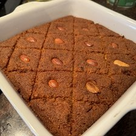
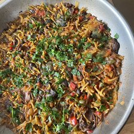
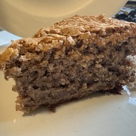
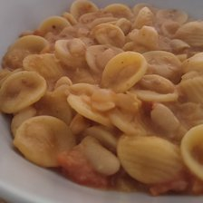
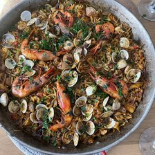

Banana Bread Pistaches
Un banana bread bien riche et moelleux.
Un banana bread bien riche et moelleux.
Mélanger 200g de flocons d'avoine, 150g de courge, 80ml d'huile de coco, 80ml de tahin, 125ml de sirop d'érable, 1 cac de vanille, 3 blancs d'oeufs, 30g de graines de tournesol, 4…

Mélanger 2 tasses de semoule (1 de fine, 1 de couscous), 1 tasse de coco râpée, 1/3 tasse de sucre, 1 tasse de yaourt, 1 cac de bicarbonate et 1 cac de levure chimique.

Porter à ébullition 25cl de lait.
Le grand classique de la cuisine française.
Préchauffer le four à 175ºC (th. 6).
La version de Tomás de ce plat nîmois.
De l’EcoResort Cerdanya.
Fondre 200g de chocolat et 125g de beurre au bain-marie.
Un cake salé sans gluten, à garnir selon les envies.
Dans une casserole, porter à ébullition 1/2L des 0.75L de lait avec 65g de beurre.
Faire un caramel bien fort.
Comment le réussir à chaque fois.
De Guillaume S.
Préchauffer le four à 180ºC (th. 6).
Recette catalane.
Haricots, riz, patacones, avocat et pico de gallo frais.
Version de Julia.
Mélanger 30g de flocons d'avoine, 60g de graines de courge, 30g de graines de tournesol, 130g de farine de sarrasin et 1/2 cac de sel.

Porter à ébullition 75cl de lait avec la cannelle en bâton et le zeste de citron (et/ou d’orange).
Porter à ébullition 25cl de lait avec de la vanille.
Préparer un caramel avec 100g de sucre et 1 cas d'eau, et le verser dans le moule.
Mélanger 75g de beurre, 40g de parmesan, 60g de chapelure et 40g de farine.
Préchauffer le four à 180ºC (th. 6).
Faire un puits avec 250g de farine de manioc « pandeyuca » (Colmaiz).
Chauffer 2 cas d'huile avec la pâte de curry.
Mélanger 200g de farine, 75cl de lait, 170g de sucre, 2 sachets de sucre vanillé et 4 oeufs.
Mixer 3 verres de semoule fine, 1 cac de sel et 4 verres d'eau au blender à vitesse forte pendant 4min.
Porter à ébullition de l’eau, puis y plonger les fèves jusqu’à ce qu’elles rendent un jus noir (environ 10min).
Recette catalane.

Recette express.
Porter à ébullition 1L de lait avec de la vanille, puis le laisser refroidir.
Préchauffer le four à 210ºC (th. 7).
De l’Avia Montse.
De Mamie Josette.
De Mamie Lucette.

De Mamie Lucette.
Porter à ébullition 1L de lait avec 100g de sucre, 1 cac de vanille et 2 cac de cannelle.
Tamiser 250g de farine avec 1 pincée de sel et 50g de sucre.
Diluer 15g de levure fraîche dans 150ml de lait.
Tremper 70g de pain sec puis l’égoutter.
Bien mélanger 100g de beurre mou et 100g de sucre glace.
Classique économique.
Laver 2 aubergines et les couper en tranches d’un demi-centimètre. Les parsemer de sel et les laisser dégorger dans une passoire pendant 1h.
Dorer la viande hachée avec des oignons émincés, des carottes râpées, des champignons, de l’ail et du persil.
Dorer 1 gousse d'ail et 1 oignon émincé (beaucoup).

Rincer 500g de pois chiches.
Dans un plat jetable en aluminium, fabriquer une planche percée de trous de 1cm de diamètre.
Mélanger 200g de farine et 2 oeufs.
De Mamie Josette.
Mélanger 4 oeufs avec 2 yaourts.
De Farida.
De Mamie Josette.
Fondre 200g de chocolat avec un peu de beurre.
À servir avec un coulis de frambroise.
Pour 15 gros ou 30 petits nuggets.
Cuire 1 seiche et 1 calamar pour qu’ils rendent leur eau. Retirer.

De Mamie Lou.
Pour 20 crêpes.
Ou farine de blé noir.
Pour 10 boules de pizza de 280g.
Tailler 125g de beurre ramolli en morceaux.
D’Ari.
Comment ne pas les rater.
D’Albert.
Exprimer 0.5 L de jus de citron.
D’Ari.
Un classique de l’hiver qui fait toujours plaisir.
Battre 75g de sucre avec 2 oeufs entiers et 3 jaunes d'oeufs.
De Loli.
Recette originale.
Cuire 2kg de pommes de terre à l’eau pendant 20min. Les éplucher et les couper en rondelles.
Râper 1 doigt de gingembre.
Séparer les blancs des jaunes de 5 oeufs.
D’Ari.
Fondre du beurre.